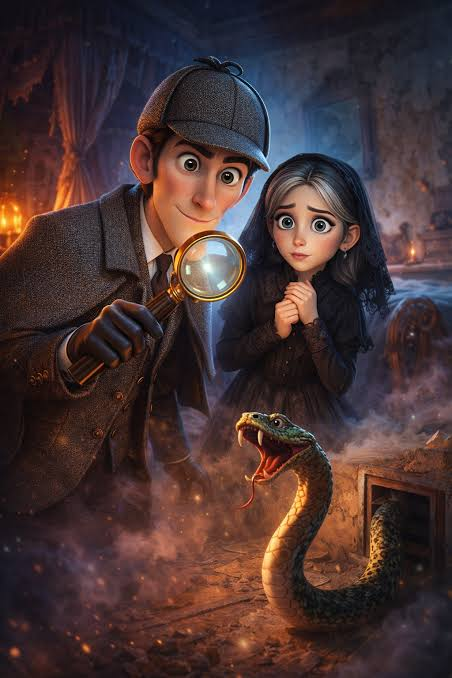

הרפתקאות שרלוק הולמס
מחבר: ארתור קונן דויל
שנת פרסום מקורית: 1892
קטגוריה: מתח ומסתורין
תקציר הספר
אסופת סיפורי בלשות שבה שרלוק הולמס ודוקטור ווטסון חוקרים תעלומות בלונדון וסביבתה. באמצעות הבחנה בפרטים קטנים, היגיון וחשיבה מקורית, הולמס מנסה לפענח מקרים שנראים בלתי אפשריים.
חזרה לקטלוג הספרים